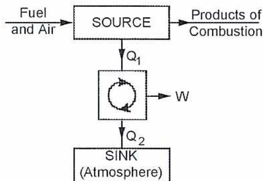
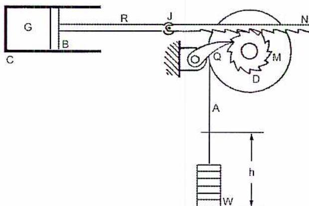
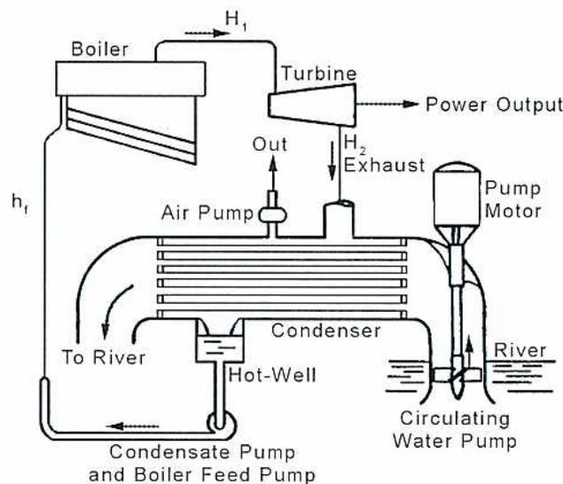
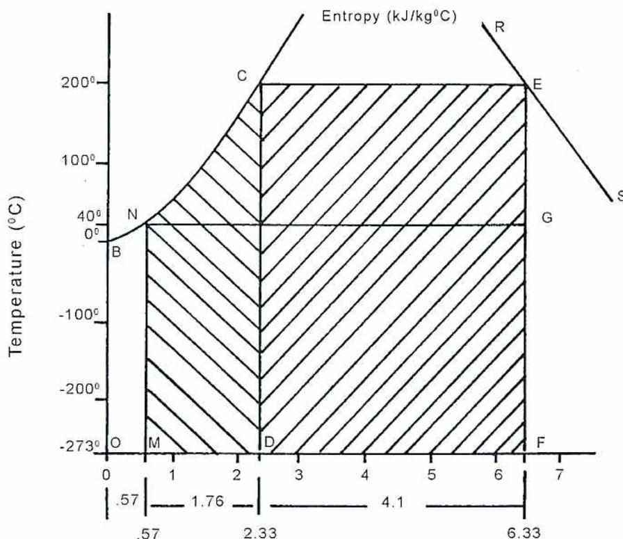
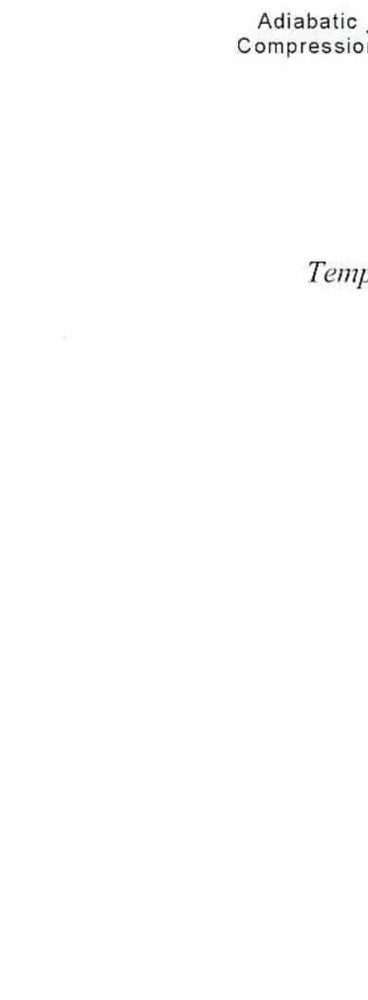
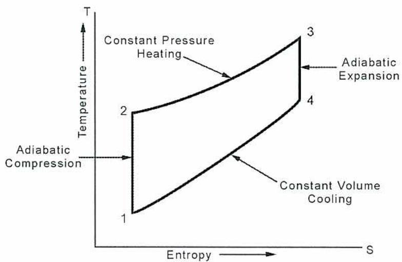
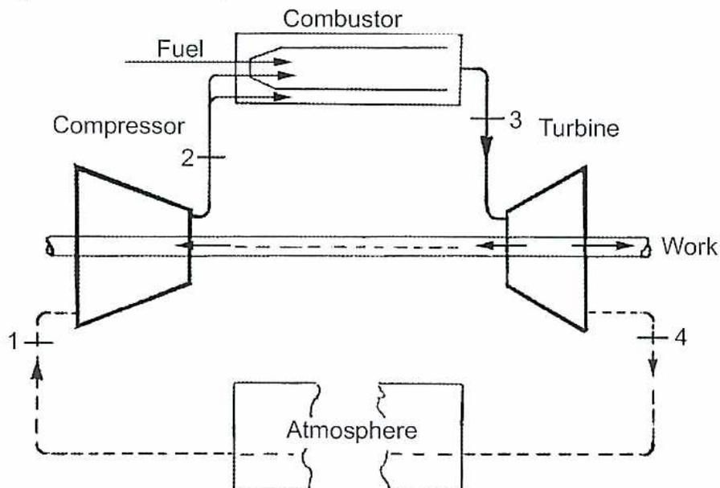
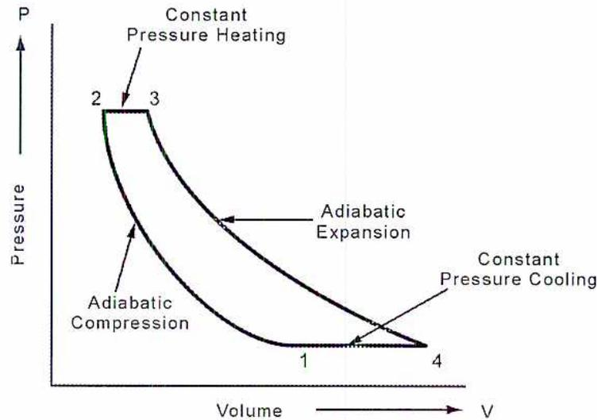
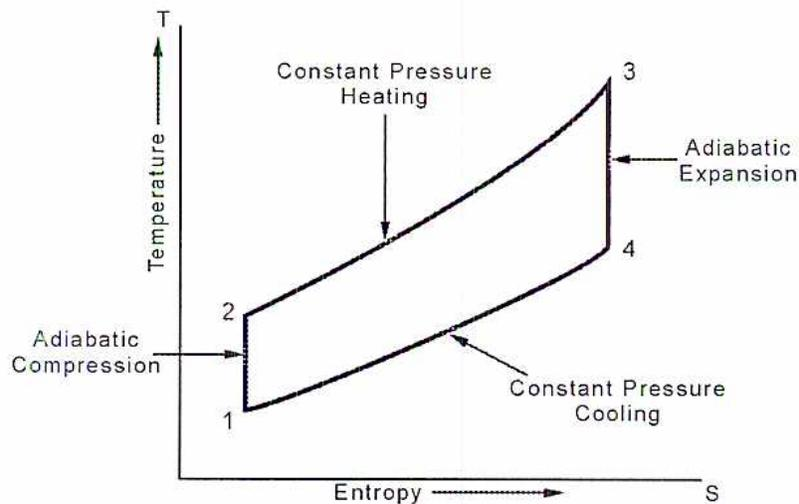

Practical Thermodynamic Cycles
3
Learning Outcome
When you complete this learning material, you will be able to:
Explain the concepts and use of thermodynamic cycles using pressure-volume and temperature-entropy diagrams.
Learning Objectives
You will specifically be able to complete the following tasks:
- 1. Explain the concept of a heat engine and describe the different types of heat engines.
- 2. Describe the Carnot cycle.
- 3. Explain the Rankine cycle using pressure-volume and temperature-entropy diagrams.
- 4. Explain the Otto cycle using pressure-volume and temperature-entropy diagrams.
- 5. Explain the Diesel cycle using pressure-volume and temperature-entropy diagrams.
- 6. Explain the Brayton cycle using pressure-volume and temperature-entropy diagrams.
- 7. Calculate thermal efficiencies for vapour cycles and explain efficiency limits.
- 8. Calculate thermal efficiencies for gas cycles and explain efficiency limits.
- 9. Calculate the heat balance at different points in a Rankine cycle system using test data provided
Objective 1
Explain the concept of a heat engine and describe the different types of heat engines.
HEAT ENGINES
One of the most important applications of thermodynamics is in heat engines. A heat engine converts heat energy into mechanical energy. This module will cover the most common types.
A conceptual way of depicting the basic elements of a heat engine is shown in Fig. 1. Every heat engine has three components:
- 1. A high temperature heat source usually obtained by combustion of a fuel.
- 2. A cyclic process that acts on a working fluid.
- 3. A low temperature heat sink to which heat is rejected.

graph TD; FA[Fuel and Air] --> SOURCE[SOURCE]; SOURCE --> PC[Products of Combustion]; SOURCE -- Q1 --> CYCLE[CYCLE]; CYCLE -- W --> W_OUT[W]; CYCLE -- Q2 --> SINK[SINK (Atmosphere)];
Figure 1
Basic Elements of a Heat Engine
The following are three general statements about how heat engines operate:
- 1. The heat supply and rejection processes are carried out cyclically to produce continuous work (or power).
- 2. The working fluid is able to return to its original state at the end of each cycle.
- 3. The work done during a cycle is equivalent to the difference between the heat supplied and heat rejected.
There are different ways of constructing a heat engine and various cycles are used.
The heat engine can operate in reverse, so it becomes a refrigeration device, air conditioner or heat pump. These applications are covered in other modules.
A SIMPLE HEAT ENGINE
Fig. 2 shows the basic elements of a simple heat engine. \( C \) is the cylinder, open at one end and closed at the other, in which is fitted a gas-tight working face \( B \) , called a piston. The piston moves in or out within the cylinder freely. A gas is trapped in the cylinder space \( G \) . The rod \( R \) , fixed to the piston, is attached to the rack (or ratchet) \( N \) , at the joint \( J \) , the rack being in contact with the toothed wheel \( M \) , or ratchet wheel. This is prevented from turning in an anticlockwise direction by the pawl \( Q \) .

The diagram illustrates a simple heat engine. On the left, a horizontal cylinder \( C \) contains a gas space \( G \) and a piston \( B \) . A rod \( R \) extends from the piston to a joint \( J \) , where it connects to a horizontal rack \( N \) . The rack's teeth engage with a toothed wheel \( M \) mounted on a drum \( D \) . A pawl \( Q \) is engaged with the wheel \( M \) to prevent it from rotating anticlockwise. A cord \( A \) is wound around the drum \( D \) and hangs down to support a mass \( W \) . The vertical displacement of the mass is labeled \( h \) .
Figure 2
A Simple Heat Engine
The toothed wheel is attached to the drum \( D \) , around which is wrapped a cord \( A \) carrying a mass \( W \) . It is clear that when the piston moves to the right, the ratchet wheel \( M \) will be turned clockwise by the rack, but if the piston moves to the left the wheel will remain stationary, held by the pawl \( Q \) . The motion of the piston to the right will be resisted by the action of the mass \( W \) (through the ratchet wheel and rack) and by the pressure of the atmosphere on the outer face of the piston. Such motion of the piston, however, will cause work to be done in that the mass will be raised through, say a height \( h \) .
If the gas in the cylinder is heated such that its volume increases, that is, the gas expands, the piston \( R \) will move to the right, and work will be performed in lifting the mass. The amount of work which may be done in this way is, however, limited by the extent of the travel of the piston in the cylinder. By cooling the gas, the piston could be made to move to the left, the volume of the gas decreasing in the cooling process (the piston being moved to the left by virtue of the pressure difference between the atmosphere and the gas in the cylinder). In this way, the condition of the gas might be restored to its initial state, or condition, such that subsequent heating would produce further work.
It is seen, therefore, that by alternate heating and cooling processes the engine can be made to raise the mass through any desired height in stages.
This simple example allows for the following important observations to be made and some conclusions drawn which apply equally well to all heat engines:
- • A conversion of energy from heat to mechanical work has taken place. This has been done through the alternate supply and rejection of heat to and from the working fluid in the engine cylinder.
- • It is apparent that these operations must be repeated to maintain the work output.
- • There must be a relationship between the quantities of heat involved and the amount of work produced.
These observations, supported by experiments and calculations lead to the following statements:
- • All heat engines must have a source of heat, a working fluid and a sink.
- • In order to produce continuous work, the processes of heat supply and heat rejection must be carried out cyclically.
- • The working fluid must be capable of returning to its original state at the end of each cycle.
- • During the cycle of operations, the work done will be equivalent to the difference between the heat supplied and the heat rejected.
TYPES OF HEAT ENGINES
Heat engines are known by the type of thermodynamic cycle they utilize. The cycles explained in this module are:
- 1. The Carnot cycle: a theoretical cycle which has the highest possible efficiency
- 2. The Rankine cycle: applicable to steam plants
- 3. The Otto cycle: used by spark ignition engines
- 4. The Diesel cycle: used by compression ignition or Diesel engines
- 5. The Brayton cycle: applicable to gas turbines (closed and open)
Heat engines are divided into two types based on the type of working fluid:
- • Gas cycle
- • Vapour cycle
Gas Cycles
Gas cycles use air as the main working fluid. They take air from the atmosphere, combust it with fuel and release it back to the atmosphere after the available energy has been extracted. The Otto, Diesel and Brayton cycles are all gas cycles. The closed cycle gas turbine, which can use any fluid because combustion is external with a heat exchanger, is an exception.
Vapour Cycle
The vapour cycle features a condensable vapour which is in the liquid phase during a part of the cycle. The most commonly used working fluid is steam. The Rankine cycle is the classic vapour cycle.
Objective 2
Describe the Carnot cycle.
THE CARNOT CYCLE
Sadi Carnot proposed an engine cycle in 1824 which has remained as an ideal upper limit of efficiency for heat engines of all types. In brief, he stated that this engine would operate in such a way that all heat supplied must be at the top temperature of the cycle and all heat rejected must be at the bottom temperature of the cycle. Further, the expansion of the working fluid must take place without any heat transfer to or from the surroundings and without any internal loss of energy of any kind.
Such an engine cycle is capable of producing the maximum work output of any cycle working between the same temperature limits. The Carnot cycle of operations, taking place on the working fluid in a heat engine, consists of an isothermal heat addition followed by an adiabatic expansion, an isothermal heat rejection and finally an adiabatic re-compression.
In considering this ideal engine, as shown in Fig. 3, imagine a cylinder and piston which are perfect non-conductors and frictionless. Let the cylinder cover be a perfect conductor in which the heat is added or removed through the cylinder cover.
At point a the hot body, A at temperature \( T_1 \) having infinite capacity for supplying heat, is placed in contact with the cover of the cylinder which contains 1 kilogram of a perfect gas at temperature \( T_1 \) , volume \( V_a \) and pressure \( P_a \) . The piston is allowed to move slowly so that isothermal expansion takes place at temperature \( T_1 \) . The gas does work during the expansion from \( P_a V_a \) to \( P_b V_b \) and must take in an amount of heat equivalent to the work done.
Remove the hot body A and replace with a perfect nonconducting cover B and then allow the piston to go on moving right. Since no heat can be taken in or rejected under these conditions, the gas expands adiabatically doing work at the expense of its internal energy and its temperature falls.
Let this adiabatic expansion go on until the temperature is \( T_2 \) and let the pressure be \( P_c \) and the volume \( V_c \) .
Remove the non-conducting cover \( B \) and apply \( C \) , a body which is capable of taking up any amount of heat, and let this body remain at some constant temperature \( T_2 \) which is lower than \( T_1 \) . Now force the piston back slowly and the gas will be compressed isothermally at \( T_2 \) . Work is done on the gas and the heat equivalent of this work is rejected to \( C \) . Let this isothermal compression be continued until a certain point is reached such that if the fourth operation is carried out adiabatically from this point, the cycle will be completed and the diagram closed.
Now remove the body \( C \) and again apply the nonconducting cover \( B \) . Continue the compression which will now be adiabatic. The pressure and temperature will rise and if the point \( d \) has been properly chosen, when the pressure comes back to its original value \( P_a \) , the volume will be the original \( V_a \) , and the temperature will have risen to its original value \( T_1 \) . In other words, the third operation must be stopped at a point so that an adiabatic line drawn through this point will reach the original point.
This ideal engine suffers no losses from radiation, conduction or friction; in other words, it is an engine in which all the heat supplied is accounted for by the sum of the heat converted to work and the heat rejected.
Further, it is an engine in which all the heat supplied is supplied at a constant temperature \( T_1 \) , the temperature of the hot body; all the heat is rejected at a constant temperature \( T_2 \) , the temperature of the cold body.
![Diagram of a Carnot cycle heat engine and its P-V graph. The top part shows a cylinder with a piston, flanked by a 'Hot Body T1', a 'Non-Conductor', and a 'Cold Body T2'. Arrows indicate 'Expansion' and 'Compression'. The bottom part is a Pressure (P) vs. Volume (V) graph showing a closed cycle with four states: a, b, c, and d. The cycle consists of two adiabatic processes (labeled 'Adiabatic PV^n = Const.') and two isothermal processes (labeled 'Isothermal PV = Const.'). The area enclosed by the cycle is shaded.](352c5fab6f936356e9570761a02ab71e_img.jpg)
The diagram illustrates a Carnot cycle heat engine. At the top, a schematic shows a cylinder containing a gas with a piston. Above the cylinder are three components that can be placed in contact with its base: a 'Hot Body' at temperature \( T_1 \) , a 'Non-Conductor', and a 'Cold Body' at temperature \( T_2 \) . Arrows indicate 'Expansion' (outward) and 'Compression' (inward) of the gas. Below this, a Pressure (P) versus Volume (V) graph shows the cycle. The cycle proceeds clockwise through four states: a, b, c, and d. The process from a to b is an isothermal expansion (labeled 'Isothermal PV = Const.'). The process from b to c is an adiabatic expansion (labeled 'Adiabatic \( PV^n = \text{Const.} \) '). The process from c to d is an isothermal compression (labeled 'Isothermal PV = Const.'). The process from d to a is an adiabatic compression (labeled 'Adiabatic \( PV^n = \text{Const.} \) '). Dashed vertical lines link the piston's position to specific volumes on the V-axis. The area enclosed by the cycle a-b-c-d is shaded, representing the net work done.
Figure 3
Example of a Heat Engine Using the Carnot Cycle
Objective 3
Explain the Rankine cycle using pressure-volume and temperature-entropy diagrams.
THE RANKINE CYCLE
The Rankine cycle is the most fundamental vapour cycle and is in wide use in steam power plants. A basic description of a steam plant is illustrated in Fig. 4. Heat is supplied to a boiler to produce either saturated vapour or superheated steam. This steam is then expanded through a turbine to extract mechanical work. The steam is then converted to its liquid phase by being cooled in a water condenser. This condensate is re-pressurized to the required boiler feed pressure with a boiler feed pump and then returned to the boiler.

The diagram shows the flow of a basic steam plant. High-pressure steam ( \( H_1 \) ) leaves the Boiler and enters the Turbine, where it produces Power Output. The exhaust steam ( \( H_2 \) ) enters the Condenser. Inside the Condenser, heat is removed by cooling water circulated from a River by a Circulating Water Pump driven by a Pump Motor. An Air Pump removes non-condensable gases. The condensed water collects in a Hot-Well and is then pumped back to the Boiler by a Condensate Pump and Boiler Feed Pump through a return line ( \( h_f \) ).
Figure 4
Basic Steam Plant
This cycle is more practical than the Carnot in that it specifies that the heat rejection process (carried out in the condenser) be continued until the condensing process is complete. The Rankine Cycle specifies that the heat addition and heat rejection processes be carried out at constant pressure instead of constant temperature . This allows the steam plant operating on a Rankine Cycle to employ superheating.
The heat addition and rejection temperature \( T_1 \) and \( T_2 \) of the Carnot Cycle are now replaced by the pressures \( P_1 \) and \( P_2 \) , respectively.
PRESSURE-VOLUME DIAGRAM
The Rankine Cycle is illustrated on the pressure-volume ( \( PV \) ) diagram shown in Fig. 5.
- Stage 1 to 2 - The boiler receives the working substance as a compressed liquid at point 1 at the pressure \( P_1 \) . Heat is added in the boiler and the liquid temperature rises until saturation point is reached. As further heat is added the liquid evaporates, at constant pressure and temperature, until it leaves the boiler as a dry saturated vapour at point 2.
- Stage 2 to 3 - This stage is an adiabatic expansion, taking place in the prime mover in a similar manner to the corresponding Carnot stage.
- Stage 3 to 4 - This is the heat rejection process, carried out at constant pressure until the working substance leaves the condenser as a liquid at pressure \( P_2 \) at point 4.
- Stage 4 to 1 - This stage is an adiabatic compression to return the fluid to the original condition at point 1. This can be more easily achieved in a practical plant than the comparable Carnot stage. The compression takes place in a feedwater pump with very little heat addition; the majority of the heat supplied from the feed heaters will be at a point following the feedwater pump, that is, after the fluid has reached its \( P_1 \) pressure again.
![Pressure-Volume Diagram for the Rankine Cycle. The vertical axis is Pressure (P) and the horizontal axis is Volume (V). The cycle consists of four points: 1 (top left), 2 (top right), 3 (bottom right), and 4 (bottom left). The process from 1 to 2 is a horizontal line labeled 'Heat Supplied at Top Pressure'. The process from 2 to 3 is a curve labeled 'Adiabatic Expansion'. The process from 3 to 4 is a horizontal line labeled 'Heat Rejected at Bottom Pressure'. The process from 4 to 1 is a vertical line. The area under the curve 2-3 and above the line 3-4 is shaded.](42ff8b598a0818ca8b6ef30850ad5f4e_img.jpg)
Figure 5
Pressure-Volume Diagram for the Rankine Cycle
TEMPERATURE-ENTROPY DIAGRAM
Fig. 6 illustrates the heat process occurring when the feedwater received in the boilers of a power plant, at 40°C, is heated and converted into steam at a temperature of 200°C, and then gives up heat in doing work. When the feedwater first enters the boiler its temperature must be raised from 40°C to 200°C before any steaming begins. The quantity of heat added to the water is indicated by the area MNCD . This area represents approximately the difference between the enthalpies of the water. Using the steam tables, this is shown to be (852 - 168) or about 684 kJ. The horizontal or entropy scale shows that the difference in entropies of the water to be (2.33 - 0.57) or about 1.76 kJ/(kg.K).
The curve NC (the liquid line) is constructed by plotting, from the steam tables, the values of the entropy of the water for a number of different temperatures between 40°C and 200°C.
When water at 200°C is converted into steam at that temperature, the curve representing the change is a constant temperature line, and therefore horizontal, represented by CE . Provided the evaporation has been complete, the heat added in this process is the latent heat, or the heat of evaporation ( \( h_{fg} \) ), at 200°C which is found to be 1941 kJ/kg. This quantity of heat, causing the water to change to steam, is indicated by the area DCEF . The change in entropy during evaporation is found to be 4.10 kJ/(kg.K).

The diagram shows a Temperature-Entropy (T-s) plot. The y-axis represents Temperature in degrees Celsius (°C), ranging from -273 to 200. The x-axis represents Entropy in kJ/kg°C, ranging from 0 to 7. A saturation curve is depicted with a horizontal line at 200°C (C-E) and a liquid line (N-C). The area under the liquid line from N to C, bounded by the y-axis and a vertical line at entropy 2.33, is shaded and labeled MNCD. The area under the horizontal line from C to E, bounded by a vertical line at entropy 2.33 and a vertical line at entropy 6.33, is also shaded and labeled DCEF. The x-axis has major ticks at 0, 1, 2, 3, 4, 5, 6, 7. Below the x-axis, specific entropy values are marked: 0.57 at point N, 2.33 at points D and C, and 6.33 at points F and E. The interval between 0.57 and 2.33 is labeled 1.76. The interval between 2.33 and 6.33 is labeled 4.1.
Figure 6
Temperature-Entropy Diagram for the Rankine Cycle
Many variations on this basic cycle are in use. These include reheating after partial expansion and then a second expansion through another turbine as well as regeneration which preheats the feedwater before it enters the boiler.
Objective 4
Explain the Otto cycle using pressure-volume and temperature-entropy diagrams.
THE OTTO CYCLE
The Otto cycle is applied to the spark-ignition that is used in internal combustion engines. The defining feature of the Otto cycle is that the addition and rejection of heat are done at constant (actually almost constant) volume. The main working fluid is air which is taken in from the atmosphere and exhausted along with the products of combustion.
Combustion occurs internally in the cylinder as opposed to the Rankine cycle steam plant where combustion is external. Because the significant part of the Otto cycle occurs inside the cylinder, it is called a non-flow process.
PRESSURE-VOLUME DIAGRAM
The variation in pressure and volume is shown in Fig. 7. The intake and exhaust strokes are not shown on this diagram because thermodynamically, they cancel each other out.
The end of the intake stroke is at point 1. Between points 1 and 2, compression takes place adiabatically and both the pressure and temperature rise as the volume is decreased.
From points 2 to 3, internal combustion takes place. This occurs at approximately constant volume when the piston is at the top part of its stroke.
From points 3 to 4, work is performed as the piston moves to the right by adiabatic expansion until atmospheric pressure is reached.
From points 4 to 1, exhausting gas from the cylinder releases pressure at constant volume. In practical terms, this process can be accomplished with either two strokes (or one rotation of the engine) or with four strokes (two rotations of the engine).
![Figure 7: Pressure-Volume Diagram for the Otto Cycle. The top part is a P-V diagram with Pressure (P) on the vertical axis and Volume (V) on the horizontal axis. The cycle consists of four states: 1 (bottom right), 2 (top left), 3 (top left, above 2), and 4 (middle right). Process 1-2 is Adiabatic Compression. Process 2-3 is Constant Volume Heating. Process 3-4 is Adiabatic Expansion. Process 4-1 is Constant Volume Cooling. The bottom part is a schematic of a piston-cylinder. It shows the piston at the bottom (state 1), moving up to state 2, then a dashed line for state 3, and finally state 4. The distance from the bottom to the first dashed line is labeled 'Clearance Volume'. The distance between the two dashed lines is labeled 'Swept Volume'.](ad29805cd4f64ad2828e14feb66de664_img.jpg)
Figure 7
Pressure-Volume Diagram for the Otto Cycle
TEMPERATURE-ENTROPY DIAGRAM
The temperature-entropy diagram for the Otto cycle is shown in Fig. 8. Both the compression and expansion are isentropic, that is, reversible and adiabatic. The other two parts of the cycle cause a change in both temperature and entropy as heat is added and rejected.

graph TD
1((1)) -- Adiabatic Compression --> 2((2))
2 -- Constant Volume Heating --> 3((3))
3 -- Adiabatic Expansion --> 4((4))
4 -- Constant Volume Cooling --> 1
The diagram shows a Temperature-Entropy (T-S) plot for an Otto cycle. The vertical axis is labeled 'Temperature' with a 'T' at the top. The horizontal axis is labeled 'Entropy' with an 'S' at the right. The cycle is a closed loop with four states: 1, 2, 3, and 4.
- State 1 is at the bottom left.
- State 2 is directly above state 1.
- State 3 is at the top right.
- State 4 is directly below state 3.
- 1 to 2: A vertical line labeled 'Adiabatic Compression'.
- 2 to 3: A curved line labeled 'Constant Volume Heating'.
- 3 to 4: A vertical line labeled 'Adiabatic Expansion'.
- 4 to 1: A curved line labeled 'Constant Volume Cooling'.
Figure 8
Temperature-Entropy Diagram for the Otto Cycle
Objective 5
Explain the Diesel cycle using pressure-volume and temperature-entropy diagrams.
THE DIESEL CYCLE
The Diesel cycle applies to the compression-ignition, internal combustion engines. The important aspect of the Diesel cycle is that the addition of heat is done at almost constant pressure. Air is the main working fluid. In contrast with the Otto cycle where a mixture of air and fuel is compressed and a spark ignites it, the air is compressed to a higher pressure and the fuel ignites spontaneously when the fuel is added.
PRESSURE-VOLUME DIAGRAM
The variation in pressure and volume is shown in Fig. 9. The intake and exhaust strokes are not shown on this diagram because thermodynamically, they cancel each other out.
The diagram starts at point 1 which is the end of the intake stroke. Between points 1 and 2, compression takes place adiabatically. Both the pressure and temperature rise as the volume is decreased.
From point 2 to point 3, internal combustion takes place. This occurs at approximately constant pressure while the piston is moving to the right for the first part of the power stroke.
From point 3 to point 4, work is done during the second part of the power stroke by adiabatic expansion until atmospheric pressure is reached.
From point 4 to point 1, pressure is released at constant volume by the exhausting of gas from the cylinder. This process can be accomplished with either two strokes (or one rotation of the engine) or with four strokes (two rotations of the engine).
![Figure 9: Pressure-Volume Diagram for the Diesel Cycle. The top part is a P-V diagram with Pressure (P) on the vertical axis and Volume (V) on the horizontal axis. The cycle consists of four points: 1, 2, 3, and 4. Process 1-2 is Adiabatic Compression. Process 2-3 is Constant Pressure Heating. Process 3-4 is Adiabatic Expansion. Process 4-1 is Constant Volume Cooling. The bottom part is a schematic of a piston-cylinder. It shows the piston at the bottom (point 1), moving up to point 2 (Clearance Volume), then moving down to point 3 (Swept Volume), and finally moving back up to point 4. The diagram is labeled with 'Clearance Volume' and 'Swept Volume'.](3102c32204f998dba666e1e915d5babf_img.jpg)
Figure 9
Pressure-Volume Diagram for the Diesel Cycle
TEMPERATURE-ENTROPY DIAGRAM
The temperature-entropy diagram for the Diesel cycle is shown in Fig. 10. Both the compression and expansion are isentropic, that is, reversible and adiabatic. The other two parts of the cycle cause a change in both temperature and entropy as heat is added and rejected. It is similar to the Otto cycle except that the addition of heat is at constant pressure which changes the nature of the curve from points 2 to 3.

The diagram shows a Temperature-Entropy (T-S) plot for a Diesel cycle. The vertical axis is labeled 'Temperature' with a 'T' at the top, and the horizontal axis is labeled 'Entropy' with an 'S' at the right. The cycle is a closed loop with four states: 1, 2, 3, and 4.
- Process 1-2: A vertical line from state 1 to state 2, labeled 'Adiabatic Compression'.
- Process 2-3: A curved line from state 2 to state 3, labeled 'Constant Pressure Heating'.
- Process 3-4: A vertical line from state 3 to state 4, labeled 'Adiabatic Expansion'.
- Process 4-1: A curved line from state 4 to state 1, labeled 'Constant Volume Cooling'.
Figure 10
Temperature-Entropy Diagram for the Diesel Cycle
Objective 6
Explain the Brayton cycle using pressure-volume and temperature-entropy diagrams.
THE BRAYTON CYCLE
The Brayton cycle, also known as the Joule cycle, applies to gas turbines. Air is compressed in a compressor and then fuel is added and burnt in a combustor. The combusted air is mixed with secondary compressed air to reduce it to a temperature that the turbine can safely handle. The very hot air is expanded through a turbine. A portion of the work the turbine produces is used to power the compressor, and the remainder is available for mechanical work to drive a generator or a process compressor.
Nearly all gas turbines are of the open cycle variety where the air is exhausted to the atmosphere. Some gas turbines operate on a closed cycle which allows the incorporation of a thermodynamically superior working fluid (such as helium). The efficiency of the open cycle gas turbine has progressed sufficiently that a closed cycle gas turbine offers little advantage.
The gas turbine shown in Fig. 11 is a single shaft version. The dual shaft and even triple shaft configurations are also quite common.

The diagram illustrates the basic components and flow of a gas turbine. Air enters the compressor (labeled '1') from the atmosphere, is compressed (labeled '2'), and then enters the combustor. Fuel is added to the combustor. The high-temperature gas (labeled '3') expands through the turbine, which produces work. The exhaust gas (labeled '4') is then released to the atmosphere. The compressor and turbine are connected by a common shaft.
Figure 11
Basic Gas Turbine
PRESSURE-VOLUME DIAGRAM
The pressure-volume diagram can be seen in Fig. 12. The Brayton cycle is a steady-flow process. The compression and expansion are both adiabatic in nature. The combustion is at constant pressure but also continuous in contrast with the Otto and Diesel cycles. Heat rejection takes place at constant pressure in the atmosphere which reduces the volume.

A Pressure-Volume (P-V) diagram for the Brayton cycle. The vertical axis is labeled 'Pressure' with an upward arrow, and the horizontal axis is labeled 'Volume' with a rightward arrow. The cycle consists of four states: 1, 2, 3, and 4. State 1 is at the bottom right, state 2 is at the top left, state 3 is at the top right, and state 4 is at the bottom right. The processes are: 1-2: Adiabatic Compression (a curve from 1 to 2); 2-3: Constant Pressure Heating (a horizontal line from 2 to 3); 3-4: Adiabatic Expansion (a curve from 3 to 4); 4-1: Constant Pressure Cooling (a horizontal line from 4 to 1).
Figure 12
Pressure-Volume Diagram for the Brayton Cycle
TEMPERATURE-ENTROPY DIAGRAM
The temperature-entropy diagram for the Brayton cycle is shown in Fig. 13. The compression and expansion stages are close to isentropic and the heat addition and rejection are along the lines of constant pressure.

A Temperature-Entropy (T-S) diagram for the Brayton cycle. The vertical axis is labeled 'Temperature' with an upward arrow, and the horizontal axis is labeled 'Entropy' with a rightward arrow. The cycle consists of four states: 1, 2, 3, and 4. State 1 is at the bottom left, state 2 is at the top left, state 3 is at the top right, and state 4 is at the bottom right. The processes are: 1-2: Adiabatic Compression (a vertical line from 1 to 2); 2-3: Constant Pressure Heating (a curve from 2 to 3); 3-4: Adiabatic Expansion (a vertical line from 3 to 4); 4-1: Constant Pressure Cooling (a curve from 4 to 1).
Figure 13
Temperature-Entropy Diagram for the Brayton Cycle
Similar to the steam plant, a number of different cycle modifications are possible with the gas turbine. In the past, it was common to install a regenerator which used heat extracted from the exhaust to preheat compressed air prior to combustion. Some gas turbines utilize intercooling in the compressor to increase efficiency and power output. A very limited number of gas turbines apply reheat of the combustion gases with a second turbine. A common cycle modification is the addition of a heat exchanger to the exhaust to produce steam which is used in a steam turbine to run another generator called a combined cycle. Another option, called cogeneration, is to use the steam for industrial or heating purposes.
Objective 7
Calculate thermal efficiencies for vapour cycles and explain efficiency limits.
DEFINITION OF EFFICIENCY
The efficiency of any thermodynamic cycle is represented by the ratio of the net mechanical work extracted from the cycle and the heat supplied. The heat converted into work is equal to the heat supplied minus the heat rejected to the heat sink. This gives the formula
$$ \text{Thermal efficiency} = \frac{\text{Work done}}{\text{Heat supplied}} $$
$$ \text{Thermal efficiency} = \frac{\text{Heat supplied} - \text{Heat rejected}}{\text{Heat supplied}} $$
$$ \text{Thermal efficiency} = 1 - \frac{\text{Heat rejected}}{\text{Heat supplied}} $$
For cycles that use air (Otto, Diesel and Brayton), the efficiency is often called the air standard efficiency although the term thermal efficiency is equally applicable.
An important note is that the efficiency equations derived relate to ideal efficiency and that actual values are always somewhat lower. Friction and other heat losses will result in an increase in entropy so that compression and expansion processes are not necessarily isentropic.
EFFICIENCY OF THE CARNOT CYCLE
The Carnot cycle, even though it is impractical to implement, has the highest possible efficiency so it is a valuable means of comparison.
During the Carnot cycle, the heat is supplied during an isothermal expansion. For an ideal gas, the heat can be expressed in terms of the properties of a gas using the equation:
$$ \text{Heat supplied} = mRT_1 \ln \frac{V_B}{V_A} $$
The heat rejected occurs during the isothermal compression which is found using the equation:
$$ \text{Heat rejected} = mRT_2 \ln \frac{V_C}{V_D} $$
The two volume ratios are equal which allows most of the terms to be cancelled out. The result is that the efficiency is dependent only on the two absolute temperatures so that:
$$ \eta = 1 - \frac{T_2}{T_1} $$
Example 1
A steam plant produces steam with a temperature of 520°C which is condensed back to 30°C. What is the theoretical upper limit for its efficiency based on the Carnot cycle?
Answer
The efficiency is obtained by using the equation \( \eta = 1 - \frac{T_2}{T_1} \) :
$$ \eta = 1 - \frac{T_2}{T_1} $$
$$ \eta = 1 - \frac{(30 + 273)\text{K}}{(520 + 273)\text{K}} $$
$$ \eta = 1 - \frac{303\text{K}}{793\text{K}} $$
$$ \eta = 1 - 0.3821 $$
$$ \eta = 0.6179 \text{ or } 61.79\% \text{ (Ans.)} $$
EFFICIENCY OF RANKINE CYCLE
Referring to the previous objective on the Rankine cycle, the efficiency of a steam plant is determined from the heat the boiler supplies to the steam and the work extracted from the steam turbine due to the expansion of the steam. The work the boiler feed pump does is comparatively small so it can be ignored.
Heat supplied to the steam is the difference between the enthalpy of feedwater \( h_1 \) and the steam as it leaves the boiler \( h_2 \) or \( h_2 - h_1 \) . Neglecting the work of the feed pump, \( h_1 \) is equivalent to \( h_f \) and the heat supplied is equal to \( h_2 - h_f \) .
Work done is likewise the difference between enthalpy at the boiler exit \( h_2 \) and the enthalpy \( h_3 \) at the exit of the turbine or \( h_2 - h_3 \) .
Therefore, the efficiency is:
$$ \text{Efficiency} = \frac{\text{Work done}}{\text{Heat supplied}} $$ $$ \eta = \frac{h_2 - h_3}{h_2 - h_f} $$
Example 2
Steam conditions at the exit of a boiler are 4000 kPa at 500°C. The condenser operates at a pressure of 4 kPa and the dryness of the steam is 88%. What is the ideal thermal efficiency?
Answer
Enthalpy ( \( h_2 \) ) of 4000 kPa, 500°C steam at the boiler exit is 3445.3 kJ/kg
Enthalpy of the wet steam is:
$$ 4 \text{ kPa} \quad h_f = 121.46 \text{ kJ/kg} \quad h_{fg} = 2432.9 \text{ kJ/kg} $$
$$ h_3 = h_f + xh_{fg} $$
$$ h_3 = 121.46 \text{ kJ/kg} + (0.88 \times 2432.9 \text{ kJ/kg}) $$
$$ h_3 = 121.46 \text{ kJ/kg} + 2140.95 \text{ kJ/kg} $$
$$ h_3 = 2262.41 \text{ kJ/kg} $$
Efficiency can be found using the equation \( \eta = \frac{h_2 - h_3}{h_2 - h_f} \) :
$$ \eta = \frac{h_2 - h_3}{h_2 - h_f} $$
$$ \eta = \frac{3445.3 - 2262.41}{3445.3 - 121.46} $$
$$ \eta = \frac{1182.89}{3323.84} $$
$$ \eta = 0.3559 $$
$$ \eta = 35.59\% \text{ (Ans.)} $$
Objective 8
Calculate thermal efficiencies for gas cycles and explain efficiency limits.
EFFICIENCY OF OTTO CYCLE
The Otto cycle operates with both heat supplied and heat rejected occurring at constant volume. The heat can be determined using the specific heat at constant volume or \( C_v \) multiplied by the mass and the temperature difference.
Using the basic definition of efficiency provided earlier, the efficiency can be derived:
$$ \begin{aligned}\text{Thermal efficiency} &= \frac{\text{Heat supplied} - \text{Heat rejected}}{\text{Heat supplied}} \\ &= \frac{mC_v(T_3 - T_2) - mC_v(T_4 - T_1)}{mC_v(T_3 - T_2)} \\ \eta &= 1 - \frac{T_4 - T_1}{T_3 - T_2}\end{aligned} $$
A more convenient representation of efficiency is using compression ratio based on volume, since this is much easier to obtain from the physical dimensions of the piston stroke and clearance. The derivation of this version of the efficiency equation is as follows.
Looking at Fig. 7, the volume ratio for compression and expansion ratios are equal:
$$ r_v = \frac{V_1}{V_2} = \frac{V_4}{V_3} $$
Adiabatic compression and expansion for an ideal gas can be expressed with the equations:
$$ \frac{T_2}{T_1} = \left(\frac{V_1}{V_2}\right)^{\gamma-1} $$
$$ \frac{T_3}{T_4} = \left(\frac{V_4}{V_3}\right)^{\gamma-1} $$
The compression ratio can be substituted into these equations so that:
$$ \frac{T_2}{T_1} = \frac{T_3}{T_4} = (r_v)^{\gamma-1} $$
This expression can be rearranged in the following fashion:
$$ T_3 = T_4 r_v^{\gamma-1} \text{ and } T_2 = T_1 r_v^{\gamma-1} $$
$$ T_3 - T_2 = r_v^{\gamma-1} (T_4 - T_1) $$
These can be substituted into equation \( \eta = 1 - \frac{T_4 - T_1}{T_3 - T_2} \) to provide the air standard efficiency in terms of compression ratio:
$$ \eta = 1 - \frac{1}{r_v^{\gamma-1}} $$
Internal combustion engines operating on the Otto cycle operate with a maximum compression ratio of about 10:1 to prevent pre-ignition of the air and fuel mixture. The corresponding ideal efficiency is 58.5% but the realistic value is somewhat less.
Example 3
Calculate the air standard efficiencies for a range of compression ratios (5, 10, 15 and 20) and describe the manner in which the efficiency increases with compression ratio. Use a specific heat of 1.4.
Answer
Using the equation \( \eta = 1 - \frac{1}{r_v^{\gamma-1}} \) , the efficiencies are:
$$ \eta = 1 - \frac{1}{5^{1.4-1}} = 0.4747 $$
$$ \eta = 1 - \frac{1}{10^{1.4-1}} = 0.6019 $$
$$ \eta = 1 - \frac{1}{15^{1.4-1}} = 0.6615 $$
$$ \eta = 1 - \frac{1}{20^{1.4-1}} = 0.6983 $$
From these results, it can be seen that efficiency increases with compression ratio but not at a constant rate. As the compression ratio increases, the efficiency increases less and less.
EFFICIENCY OF DIESEL CYCLE
The Diesel cycle differs from the Otto cycle in that heat is supplied at a constant pressure and rejection is at a constant volume. The basic equation for efficiency is written as:
$$ \begin{aligned}\text{Thermal efficiency} &= 1 - \frac{\text{Heat rejected}}{\text{Heat supplied}} \\ &= 1 - \frac{mC_v(T_4 - T_1)}{mC_p(T_3 - T_2)}\end{aligned} $$
The specific heats can be replaced by the ratio of specific heats to give the general equation for air standard efficiency:
$$ \eta = 1 - \frac{(T_4 - T_1)}{\gamma(T_3 - T_2)} $$
As was previously determined, during the compression stroke the temperatures can be related to the compression ratio:
$$ T_2 = T_1 r_v^{\gamma-1} $$
The expansion occurs for a portion of the power stroke after the cut-off point where the constant pressure combustion ceases. To designate where the cut-off point occurs, it is necessary to define a ratio:
$$ R = \frac{V_3}{V_2} $$
The efficiency of the diesel cycle depends not only on the compression ratio but also on the cut-off point. A short cut-off produces a higher efficiency but a longer one gives greater power. The compromise is about 10% of the stroke.
Since the combustion period between points 2 and 3 is at constant pressure, the temperatures and volumes can be related as:
$$ \frac{T_3}{T_2} = \frac{V_3}{V_2} $$ $$ \text{and } \frac{T_3}{T_2} = R $$
Substituting for \( T_2 \) :
$$ T_3 = T_1 r_v^{\gamma-1} R $$
$$ \text{Since } \frac{V_3}{V_2} = R $$
$$ \text{and } \frac{V_4}{V_2} = r $$
$$ \text{then } \frac{V_3}{V_4} = \frac{R}{r} $$
$$ \frac{T_4}{T_3} = \left( \frac{V_3}{V_4} \right)^{\gamma-1} $$ $$ = \left( \frac{R}{r_v} \right)^{\gamma-1} $$ $$ \text{and } T_4 = T_3 \left( \frac{R}{r_v} \right)^{\gamma-1} $$
Using the earlier expression for \( T_3 \) , the following equation is derived:
$$ T_4 = T_3 \left( \frac{R}{r_v} \right)^{\gamma-1} $$ $$ = T_1 r_v^{\gamma-1} R \left( \frac{R}{r_v} \right)^{\gamma-1} $$ $$ = T_1 R^\gamma $$
The general equation for air standard efficiency \( \eta = 1 - \frac{(T_4 - T_1)}{\gamma(T_3 - T_2)} \) can now be expressed in terms of compression ratio and cut-off ratio
$$ \begin{aligned}\eta &= 1 - \frac{(T_4 - T_1)}{\gamma(T_3 - T_2)} \\ &= 1 - \frac{(T_1 R^\gamma - T_1)}{\gamma(T_1 r_v^{\gamma-1} R - T_1 r_v^{\gamma-1})} \\ \eta &= 1 - \frac{(R^\gamma - 1)}{\gamma r_v^{\gamma-1} (R - 1)}\end{aligned} $$
Since compression for a diesel engine is of air only, there is not the same restriction on compression ratio as the Otto engine. Although the Otto cycle is more efficient for the same compression ratio, the diesel engine can operate at substantially higher compression ratios that make it more efficient. Mechanical considerations do limit diesels to a maximum compression ratio of approximately 25:1. Note that all temperatures are indicated as absolute temperatures.
Example 4
Calculate the air standard efficiency of a diesel engine with a compression ratio of 13:1. The temperature at the start of compression is 60°C and, after combustion, it has reached 1400°C. Use a specific heat of 1.4.
Answer
Determine the temperature after compression so that the cut-off ratio can be established:
$$ \begin{aligned}T_2 &= T_1 r_v^{\gamma-1} \\ T_2 &= (60 + 273) \times 13^{1.4-1} \\ T_2 &= 333 \times 13^{0.4} \\ T_2 &= 333 \times 2.7898 \\ T_2 &= 929.01 \text{ K}\end{aligned} $$
The cut-off ratio can be found from the ratio of temperatures:
$$ \begin{aligned} R &= \frac{T_3}{T_2} \\ R &= \frac{(1400 + 273) \text{ K}}{929 \text{ K}} \\ R &= \frac{1673 \text{ K}}{929 \text{ K}} \\ R &= 1.801 \end{aligned} $$
Then from equation \( \eta = 1 - \frac{(R^\gamma - 1)}{\gamma r_v^{\gamma-1} (R - 1)} \) , the air standard efficiency is:
$$ \begin{aligned} \eta &= 1 - \frac{(R^\gamma - 1)}{\gamma r_v^{\gamma-1} (R - 1)} \\ \eta &= 1 - \frac{(1.801^{1.4} - 1)}{1.4 \times 13^{1.4-1} (1.801 - 1)} \\ \eta &= 1 - \frac{(2.2789 - 1)}{1.4 \times 13^{0.4} (0.801)} \\ \eta &= 1 - \frac{1.2789}{1.4 \times 2.7898 \times 0.801} \\ \eta &= 1 - \frac{1.2789}{3.1285} \\ \eta &= 1 - 0.4088 \\ \eta &= 0.5912 \\ \eta &= 59.12\% \text{ (Ans.)} \end{aligned} $$
EFFICIENCY OF BRAYTON CYCLE
The Brayton cycle features adiabatic compression and expansion with combustion at constant pressure. The efficiency is obtained from the basic equation for thermal efficiency:
$$ \begin{aligned} \text{Thermal efficiency} &= \frac{\text{Heat supplied} - \text{Heat rejected}}{\text{Heat supplied}} \\ &= \frac{mC_v(T_3 - T_2) - mC_v(T_4 - T_1)}{mC_v(T_3 - T_2)} \\ \eta &= 1 - \frac{T_4 - T_1}{T_3 - T_2} \end{aligned} $$
Note that all temperatures are indicated as absolute temperatures.
It can be seen that this is the same equation as was derived for the Otto cycle. However, the version based on compression ratio is a bit different because, with the Brayton cycle, the ratio of pressures is relevant as opposed to the Otto cycle where the pressure ratio is based on the volume ratio. Referring to Fig. 12, the pressure ratio is defined as:
$$ r_p = \frac{p_2}{p_1} = \frac{p_3}{p_4} $$
The temperatures are related to the pressures with the equation:
$$ \frac{T_2}{T_1} = \left( \frac{p_2}{p_1} \right)^{\frac{\gamma-1}{\gamma}} $$
$$ \text{and } T_2 = T_1 (r_p)^{\frac{\gamma-1}{\gamma}} $$
$$ \frac{T_3}{T_4} = \left( \frac{p_3}{p_4} \right)^{\frac{\gamma-1}{\gamma}} $$
$$ \text{and } T_3 = T_4 (r_p)^{\frac{\gamma-1}{\gamma}} $$
$$ T_3 - T_2 = r_p^{\frac{\gamma-1}{\gamma}} (T_4 - T_1) $$
This can be substituted into equation \( \eta = 1 - \frac{T_4 - T_1}{T_3 - T_2} \) which results in the efficiency being dependent on the pressure ratio:
$$ \eta = 1 - \frac{1}{r_p^{\frac{\gamma-1}{\gamma}}} $$
In practice, compression ratios for gas turbines are mostly between 10:1 and 15:1 although some engines exceed 20:1. High compression ratios are difficult to achieve efficiently due to increased compressor temperatures. There is also a metallurgical limit to combustion and turbine components that limits the efficiency to a maximum of about 40%. The standard is 30-35%.
Example 5
A gas turbine operates with a pressure ratio of 12.5:1. Using an intake temperature of 20°C and a turbine inlet temperature of 1150°C, determine the temperatures at the exit
of the compressor and turbine as well as the thermal efficiency. Use a specific heat of 1.4.
Answer
Temperature at the exit of the compressor ( \( T_2 \) ):
$$ \begin{aligned} T_2 &= T_1 (r_p)^{\frac{\gamma-1}{\gamma}} \\ T_2 &= (20+273) \text{ K} \times (12.5)^{\frac{1.4-1}{1.4}} \\ T_2 &= 293 \text{ K} \times (12.5)^{\frac{0.4}{1.4}} \\ T_2 &= 293 \text{ K} \times (12.5)^{0.2857} \\ T_2 &= 293 \text{ K} \times 2.0577 \\ T_2 &= 293 \text{ K} \times 2.0577 \\ T_2 &= 602.91 \text{ K} \\ T_2 &= 602.91 \text{ K} - 273 \\ T_2 &= 329.91^\circ \text{C (Ans.)} \end{aligned} $$
Temperature at the exit of the turbine ( \( T_4 \) ):
$$ \begin{aligned} T_3 &= T_4 (r_p)^{\frac{\gamma-1}{\gamma}} \\ T_4 (r_p)^{\frac{\gamma-1}{\gamma}} &= T_3 \\ T_4 &= \frac{T_3}{(r_p)^{\frac{\gamma-1}{\gamma}}} \\ T_4 &= \frac{(1150+273) \text{ K}}{(12.5)^{\frac{1.4-1}{1.4}}} \\ T_4 &= \frac{1423 \text{ K}}{(12.5)^{\frac{0.4}{1.4}}} \\ T_4 &= \frac{1423 \text{ K}}{(12.5)^{0.2857}} \\ T_4 &= \frac{1423 \text{ K}}{2.0577} \\ T_4 &= 691.55 \text{ K} \\ T_4 &= 691.55 \text{ K} - 273 \\ T_4 &= 418.55^\circ \text{C (Ans.)} \end{aligned} $$
The efficiency is calculated using the equation \( \eta = 1 - \frac{1}{r_p^{\frac{\gamma-1}{\gamma}}} \) :
$$ \eta = 1 - \frac{1}{r_p^{\frac{\gamma-1}{\gamma}}} $$
$$ \eta = 1 - \frac{1}{(12.5)^{\frac{1.4-1}{1.4}}} $$
$$ \eta = 1 - \frac{1}{(12.5)^{\frac{0.4}{1.4}}} $$
$$ \eta = 1 - \frac{1}{(12.5)^{0.2857}} $$
$$ \eta = 1 - \frac{1}{2.0577} $$
$$ \eta = 1 - 0.4860 $$
$$ \eta = 0.5140 $$
$$ \eta = \mathbf{51.40\% \text{ (Ans.)}} $$
This is substantially higher than the practical values achieved. Values of 35% are common for gas turbines with this pressure ratio.
Objective 9
Calculate the heat balance at different points in a Rankine cycle system using test data provided.
HEAT BALANCE ANALYSIS
The term “heat balance” is applied to a schematic flow diagram for a thermal power cycle on which thermodynamic properties and mass flow are indicated for all major flow streams in the power cycle. This diagram is the result of detailed calculations which apply the laws of conservation of mass and conservation of energy, along with manufacturers’ expected performance, to each component in the power cycle. In addition to determining flow and state properties (pressure, temperature, enthalpy, and entropy) for all flows in the cycle, the calculation also predicts the overall performance (efficiency and output).
Heat balance calculations are first used to design the thermodynamic performance of power cycles. Heat balance diagrams are prepared, along with studies for sizing, selecting and optimizing the equipment in the cycle.
Heat balance diagrams are generally prepared in several stages that reflect various levels of refinement in developing the cycle design. A steam turbine manufacturer provides a heat balance for the turbine and feedwater system in which the performance for balance of plant components not in the manufacturer’s scope of supply is estimated using nominal values. This is usually called turbine vendor balance .
While these estimates (for such items as feedwater heater performance, pump performance, condenser back pressure, auxiliary steam and water flows and variations in controllable parameters at off-design loads) are reasonable when considering the turbine portion of the conceptual project, they are prepared in greater detail later in the project.
Example 6
Calculate the heat balance on a basic steam plant operating on the Rankine cycle given the following test data. Determine performance and output data (based on 1 kg of steam). Compare your results with vendor specifications provided below.
- • Boiler feedwater: 50°C
- • Boiler outlet conditions: 2000 kPa, 300°C
- • Fuel consumption: 8.9 kg of steam/ kg of fuel oil burned (heating value of 30 200 kJ/kg)
- • Boiler vendor rated efficiency: 84%
- • Turbine exit conditions: 200 kPa, dryness fraction 0.85
- • Plant rated efficiency: 35%
Answer
Using the steam tables, the heat balance results for the boiler are:
Known: \( T_1 = 50^\circ\text{C} \) \( P_1 = 2000 \text{ kPa} \) \( h_1 = 209.33 \text{ kJ/kg} \)
Known: \( T_2 = 300^\circ\text{C} \) \( P_2 = 2000 \text{ kPa} \) \( h_2 = 3023.5 \text{ kJ/kg} \)
The boiler efficiency is calculated to be:
$$ \begin{aligned} E_b &= \frac{m_{sf}(h_1 - h_w)}{HV_f} \\ E_b &= \frac{8.9 \text{ kg}(3023.5 - 209.33) \text{ kJ/kg}}{30\,200 \text{ kJ/kg}} \\ E_b &= \frac{8.9 \text{ kg} \times 2814.17 \text{ kJ/kg}}{30\,200 \text{ kJ/kg}} \\ E_b &= \frac{25046.113 \text{ kJ/kg}}{30\,200 \text{ kJ/kg}} \\ E_b &= 0.8293 \\ E_b &= \mathbf{82.93\% \text{ (Ans.)}} \end{aligned} $$
This compares favorably with the vendor rating of 84%.
Using the steam tables provided in the Academic Supplement, the heat balance results for the turbine are:
Known: \( T_2 = 300^\circ\text{C} \) \( P_2 = 2000 \text{ kPa} \) From previous: \( h_2 = 3023.5 \text{ kJ/kg} \)
Known: \( P_3 = 200 \text{ kPa} \) dryness \( s = 0.85 \) Saturation temperature: \( T_3 = 120.23^\circ\text{C} \)
$$ \begin{aligned} h_3 &= h_f + xh_{fg} \\ h_3 &= 504.7 \text{ kJ/kg} + 0.85(2201.9) \text{ kJ/kg} \\ h_3 &= 504.7 \text{ kJ/kg} + 1871.62 \text{ kJ/kg} \\ h_3 &= 2376.32 \text{ kJ/kg} \end{aligned} $$
The efficiency for the cycle is.
$$ \begin{aligned}\eta &= \frac{h_2 - h_3}{h_2 - h_f} \\&= \frac{3023.5 \text{ kJ/kg} - 2376.32 \text{ kJ/kg}}{3023.5 \text{ kJ/kg} - 209.33 \text{ kJ/kg}} \\&= \frac{647.18 \text{ kJ/kg}}{2814.17 \text{ kJ/kg}} \\&= 0.23 \\&= \mathbf{23.00 \% \text{ (Ans.)}}\end{aligned} $$
This is substantially lower than the rated efficiency and there are likely steam and turbine efficiency losses. A more detailed heat balance is required to discover the specific problem areas.
Chapter Questions
A2.3
- 1. List the three components in every heat engine.
- 2. With the aid of a simple sketch, describe the operation of an engine based on the Carnot cycle.
- 3. With the aid of a PV diagram, describe the various stages of a steam turbine operating on the Rankine cycle.
-
4. An electricity generating station operates with boiler stop valve steam conditions of 3000 kPa and 370°C and maintains a condenser back pressure of 5 kPa. Steam exhausts from the turbine with 15% wetness and the boiler feedwater returns at 140°C. Calculate the following:
- a) Carnot efficiency
- b) Rankine efficiency
- 5. Describe the main differences between the Otto and Diesel cycles. What practical limits are there with respect to their efficiencies?
- 6. Calculate the air standard efficiency of a Diesel engine with a compression ratio of 15:1. The temperature at the start of compression is 20°C and, after combustion, it has reached 1200°C. Use a specific heat of 1.4.
-
7. Air enters the inlet of a gas turbine operating on the ideal constant pressure cycle at a temperature of 22°C and 103.25 kPa. The pressure of the air at the discharge of the compressor is 600 kPa. If the temperature of the air at the turbine inlet is 745°C, calculate the following:
- a) Temperature at the end of compression
- b) Temperature at the turbine exit
- c) Ideal thermal efficiency